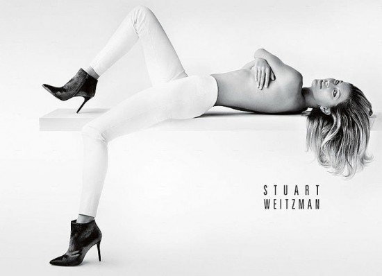
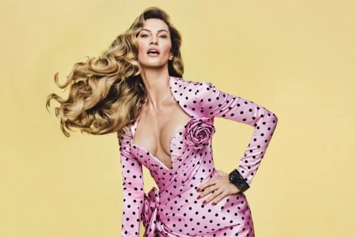

Após um hiato de oito anos, Gisele Bündchen apareceu nesta quinta-feira em campanha com a marca brasileira Colcci, onde permaneceu por mais de 10 anos e realizou a despedida das passarelas em 2015. Nas redes sociais, a modelo compartilhou um vídeo em que aparece vestindo o jeans da marca e anunciou: "Feliz em estar de volta à família Colcci". Já no perfil da Colcci, um compilado de vídeos em que Gisele aparece em diversos momentos da carreira foi publicado com a legenda: "Ela está de volta, e agora para mais uma campanha icônica. Qual a sua aposta?". Em seguida, uma imagem da modelo foi divulgada: "A nova coleção Iconic Spring chegou para fazer história". |
|  | Gisele Bündchen acaba de adicionar mais um trabalho para sua lista de campanhas publicitárias de moda. A modelo brasileira é a nova garota propaganda da marca Stuart Weitzman, substituindo a britânica Kate Moss. Na primeira imagem divulgada, clicada pelo fotógrafo Mario Testino, a modelo aparece só de calça e botas, deitada de costas, cobrindo os seios com os braços. |
|  | Fotografada pelo brasileiro Rafael Pavarotti, a mais recente campanha da marca francesa Balmain é protagonizada por Gisele, que se inseriu em um jardim lúdico de flores e cores. A escolha da modelo para estrelar a ação foi certeira por misturar elegância com a tropicalidade do Brasil. Intitulada Uma Ode ao Amor, uma Ode aos Ícones, a campanha não poupou nas homenagens, tanto à modelo gaúcha quanto à própria Balmain, com a divulgação da bolsa JM Balmain. O nome é abreviação de Jolie Madame, como ficou conhecida silhueta criada pelo fundador, Pierre, em meados do século 20. |